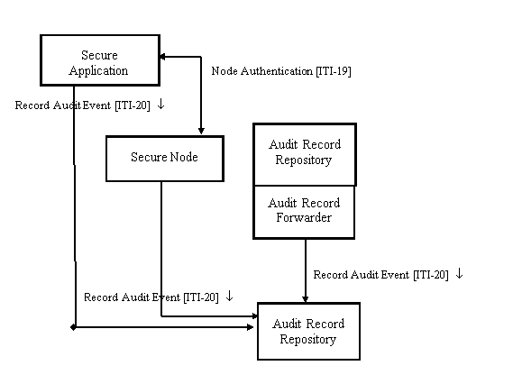
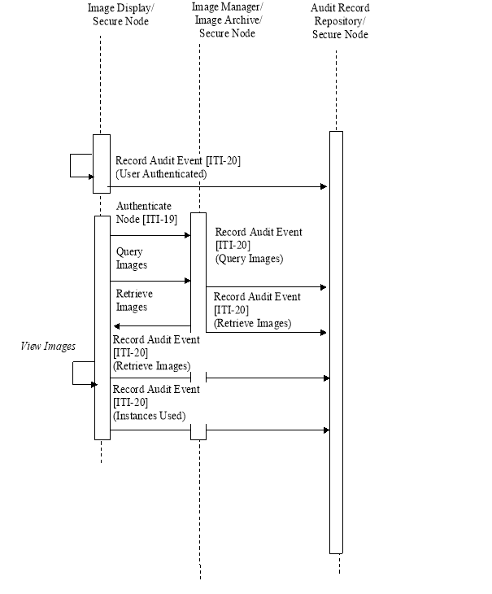
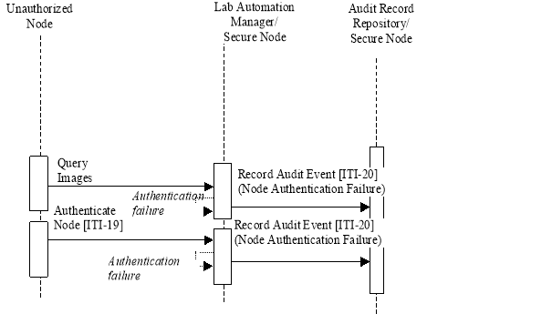

IHE IT Infrastructure (ITI)
Technical Framework
Revision 16.0 – Final Text
The Audit Trail and Node Authentication (ATNA) Profile specifies the foundational elements needed by all forms of secure systems: node authentication, user authentication, event logging (audit), and telecommunications encryption. It is also used to indicate that other internal security properties such as access control, configuration control, and privilege restrictions are provided.
Many other IHE profiles require or recommend grouping with ATNA actors as part of their security considerations.
This section defines the actors, transactions, and/or content modules in this profile. General definitions of actors are given in the Technical Frameworks General Introduction Appendix A at . http://ihe.net/TF_Intro_Appendices
Figure 9.1-1 shows the actors directly involved in the ATNA Profile and the relevant transactions between them.
Figure 9.1-1: Audit Trail and Node Authentication Actor Diagram
Table 9.1-1 lists the transactions for each actor directly involved in the ATNA Profile. To claim compliance with this profile, an actor shall support all required transactions (labeled “R”) and may support the optional transactions (labeled “O”).
Table 9.1-1: Audit Trail and Node Authentication Integration Profile - Actors and Transactions
| Actor | Transactions | Optionality | Section |
|
Audit Record Repository |
Record Audit Event [ITI-20] |
R |
|
|
Audit Record Forwarder |
Record Audit Event [ITI-20] |
R |
|
|
Secure Node |
Authenticate Node [ITI-19] |
R |
|
|
Record Audit Event [ITI-20] |
R |
||
|
Secure Application |
Authenticate Node [ITI-19] |
R |
|
|
Record Audit Event [ITI-20] |
R |
When an implementation supports a Secure Node, Secure Application or Audit Record Repository, the ATNA requirements – node authentication, user authentication, access control, event logging, and other security rules -- apply to all of the actors in the implementation.
A Secure Node is a system that provides security and privacy services (user authentication, secure communications, security audit recording, and security policy enforcement) for all software and services on that system. An ultrasound machine is an example of a Secure Node.
Security services apply to all aspects of the system from the hardware up to the user interface and external communication. A Secure Node has control over this entire stack, and ensures that all aspects are covered by the security and privacy services. A Secure Node vendor does not need to invent its own disk drives or write its own operating system. Contractual control over security is sufficient. A short list of exceptions may exist if the risk analysis indicates that these are not significant and the full list of exceptions is documented.
This permits cloud-based and other system architectures to claim to be a Secure Node when there are sufficient contractual controls to ensure that security and privacy services cover the entire relevant hardware and software stack. This includes any non-IHE applications that process PHI in that environment, such as database services.
The Secure Node shall:
A Secure Application provides security and privacy services (user authentication, secure communications, security audit recording, and security policy enforcement) for both grouped IHE actors and for functionality provided by related software and services within control of the Secure Application. A Secure Application is not responsible for security of its environment, e.g., the operating system and database outside of its control the way that a Secure Node is. A smartphone app is an example of a Secure Application that has control over the security for the application, but not the rest of the mobile device software or hardware security.
The Secure Application does not have complete control over the full stack from hardware to user interface and external communications. It only has security services control over the actors with which it is grouped.
The Secure Application shall:
The Audit Record Repository receives event audit reports and stores them. It may be part of a federated network of repositories. It is expected to have analysis and reporting capabilities, but those capabilities are not specified as part of this profile. This profile also does not specify the capacity of an Audit Record Repository, because the variety of deployment needs makes it impractical to set requirements for the event report volume or capacity needed.
The Audit Repository shall support:
The Audit Record Forwarder is grouped with an Audit Record Repository, and forwards selected audit messages that are received by the Audit Record Repository. It may filter these messages and forward them selectively. It may forward to multiple different Audit Record Repositories.
The Audit Record Forwarder shall:
Options that may be selected for this Integration Profile are listed in the Table 9.2-1 along with the actors to which they apply. Dependencies between options when applicable are specified in notes.
Table 9.2-1: ATNA - Actors and Options
| Actor | Options | Vol. & Section |
|
Audit Record Repository |
None |
- |
|
Audit Record Forwarder |
None |
- |
|
Secure Node |
Radiology Audit Trail |
RAD TF-1: 2.2.1 RAD TF-3: 5.1 |
|
Secure Application |
Radiology Audit Trail |
RAD TF-1: 2.2.1 RAD TF-3: 5.1 |
The ATNA Encryption Option is now retired because the Node Authentication [ITI-19] transaction requires support for Encryption.
The Radiology Audit Trail Option provides specific audit requirements for actors in IHE Radiology domain profiles. Actors that support this option shall audit trigger events applicable to its implementation. RAD TF-3: Table 5.1-1 and Table 5.1-2 detail audit events based on the Radiology actor.
An actor from this profile (Column 1) shall implement all of the required transactions and/or content modules in this profile in addition to all of the transactions required for the grouped actor (Column 2).
Table 9.3-1: ATNA - Required Actor Groupings
| ATNA Actor | Actor to be grouped with | Reference | Content Bindings Reference |
|
Audit Record Repository |
Consistent Time / Time Client |
N/A |
|
|
Audit Record Forwarder |
Consistent Time / Time Client |
N/A |
|
|
Secure Node |
Consistent Time / Time Client |
N/A |
|
|
Secure Application |
Consistent Time / Time Client |
N/A |
When an IHE profile requires a grouping of an actor with either Secure Node or Secure Application, then the ATNA requirements apply to all actors in the implementation.
The Audit Trail and Node Authentication (ATNA) Profile specifies foundational components that are part of an overall privacy and security system. These are:
Successful implementation of ATNA also depends on the existence and support of:
Node authentication enables communications participants to:
This enables the use of system or machine-level access controls that limit access to only authorized and authenticated machines. The local governance policies will determine whether machine level access control rules are used.
ATNA requires user Access Control . User Access Control determines whether the user has access to particular information or system services. ATNA also requires that some form of user authentication be performed. It allows the system and deployment to choose an appropriate method, but all users shall be identified and authenticated. It uses these identities in the event audit log to identify users. It requires that access control use these identities (and other information) to determine what data and services are available to that user. Other system security services may also use the user identities. .
IHE offers several profiles for different methods of user authentication. ATNA expects that local governance determines which methods of user authentication will be used. Use of the IHE profile methods such as XUA or EUA are not required. Other approaches are permitted.
For event audit logging , ATNA specifies:
Secure Communications are provided by the use of TLS. TLS provides mutual authentication, reliable message transport and private communication through data encryption. Different forms of encryption can be negotiated to protect the data in transit. ATNA permits the negotiation of no encryption to accommodate sites that prefer to use a different form of protection.
ATNA does not restrict implementations and deployments to only use the ATNA specified methods. For interoperability reasons, TLS must be implemented and available to be configured. The RFC7525 “Recommendations for Secure Use of Transport Layer Security (TLS) and Datagram Transport Layer Security (DTLS)” covers many configuration options. Deployments often follow these recommendations and make them part of their security policies. A deployment’s security analysis may lead to different choices. Therefore, it is important that implementations allow configuring different protocol versions, algorithms, etc.
Other equivalent methods may be chosen by deployments.
Cybersecurity activities include a variety of operational, technical, and administrative activities. These are specified in some areas by law or regulation. All of the laws and regulations are consistent in requiring an overall governance model, various technical tools, and operational behaviors. The technical tool requirements always include system authentication, user authentication, event logging (audit), and telecommunications encryption. They also include many other technical features regarding access control, confidentiality, user administration, backups, etc. There are typically also significant operational and administrative requirements.
This profile specifies node authentication, user authentication, event logging (audit), and telecommunications encryption. It assumes that the ATNA actors will be installed into an environment that complies with all the other governance requirements. Compliance with the ATNA Profile alone, without also performing the other cybersecurity activities, is not sufficient to provide adequate cybersecurity.
The specific requirements for cybersecurity vary for different locations and purposes. The overall goals always include protecting confidentiality of data, integrity of data and systems, and availability of systems. The requirements affect:
It is not practical or reasonable for IHE to profile those requirements. They are too varied, and cover much more than just interoperability of systems.
The ATNA Profile assumes that governance is established that is similar to the recommendations found in the NIST 500, 800, and 1800 series of publications on computer security and cybersecurity practices. These can be found at . http://csrc.nist.gov/publications/PubsSPs.html
ATNA requires that both users and machines be authenticated.
The specific method for user authentication is not specified by ATNA. IHE has profiles that specify particular kinds of user authentication. These can be used, as can other non-IHE methods for user authentication. What is important is that the authenticated identity of each user be available for purposes such as access control and event audit logging.
ATNA specifies that connections between machines be authenticated and use TLS. Some sites prefer to use an alternative, so products can be configurable to use an equivalent alternative for those sites. The TLS machine authentication is based upon the use of public and private certificates. This is the method used to authenticate many financial transactions on the Internet.
Unlike the typical Internet browser setup, within a healthcare setting:
A means must be provided to install the required certificates to any ATNA implementation so that the systems can be configured to match the local governance. The common browser root certificate list is not sufficient.
ATNA event audit logging is intended to provide a surveillance logging function. This means that it captures:
The event logging is not designed for:
The ATNA Profile defines events related to activities of the IHE actors and system components that are grouped with a secure actor. These include events such as system startup, user login (both success and failure), access control violation, etc. ATNA requires that these be detected and reported.
These events are described in ITI TF-2a: 3.20. Further event description information may also be found in DICOM PS3.15 Annex A.5.
IHE profiles that define transactions may define events and specify the event reporting structure for those events. These definitions are found in the Security Considerations section of transaction specifications in Volume 2 of the ITI Technical Framework and technical frameworks in other IHE domains
Individual products are permitted to report other events and use the DICOM event structure for this purpose. Audit Report Repositories shall accept any such reports into the repository.
Events are encoded in accordance with DICOM PS3.15 Annex A.5. This is an extensible XML schema definition.
The ATNA Profile specifies the use of transports from DICOM PS3.15 Annex A.5. It specifies Syslog Protocols as the mechanism for logging audit record messages to the audit record repository.
There are two standard transports specified in ITI TF-2a: 3.20. The Audit Record Repository shall support both transports. The Secure Node and Secure Application implementations can choose either transport.
The choice of transport can be made to fit the needs of individual deployments and nodes. Both transports are widely used in the IT industry.
The security measures in the Audit Trail and Node Authentication Integration Profile are user authentication, node authentication, and generation of audit records. Node authentication and user authentication define a number of transactions that establish the concept of a Secure Node and a collection of connected Secure Nodes in a secure domain. Generation of audit records requires a set of audit trigger events and a definition of the content of the audit records. This profile specifies two acceptable message formats:
In the following paragraphs three typical process flows are described for situations in which authorized users, unauthorized users, and unauthorized nodes attempt to gain access to protected health information (PHI).
The following scenario shows how the IHE security measures operate for authorized access to PHI from an authorized node in the network:

Figure 9.4.2.1-1: Authorized Node Process Flow
The following scenario shows how the IHE security measures help to prevent unauthorized access to PHI from an unauthorized node in the network:
Note that the sequencing of the transactions is just one example. Transactions from an unauthorized node are totally unpredictable and may happen in any order.
Figure 9.4.2.2-1: Unauthorized Node Process Flow
The following scenario shows how the IHE security measures help to prevent unauthorized access to PHI from an unauthorized user in the healthcare enterprise:
Figure 9.4.2.3-1: Unauthorized User Process Flow
See Section 9.4.
The ITI Technical Framework includes a variety of profiles for other security related purposes. There are also security related aspects of other profiles. For example, the SOAP transport can convey user identification and authentication information.
These profiles may depend upon the underlying system being a Secure Node or a Secure Applications.